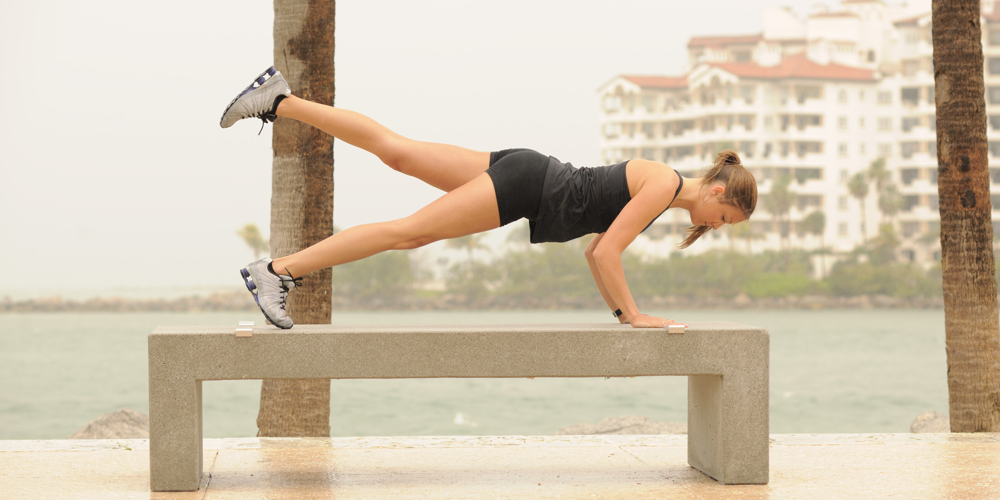
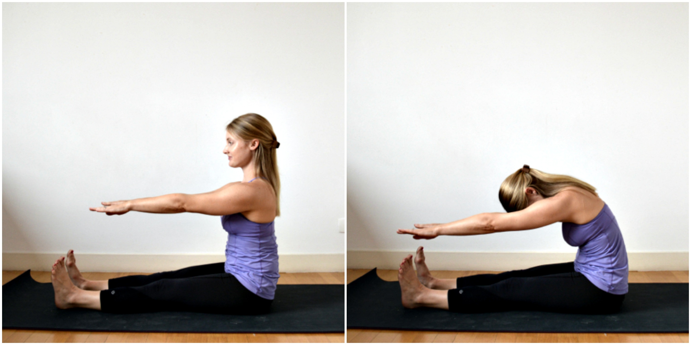
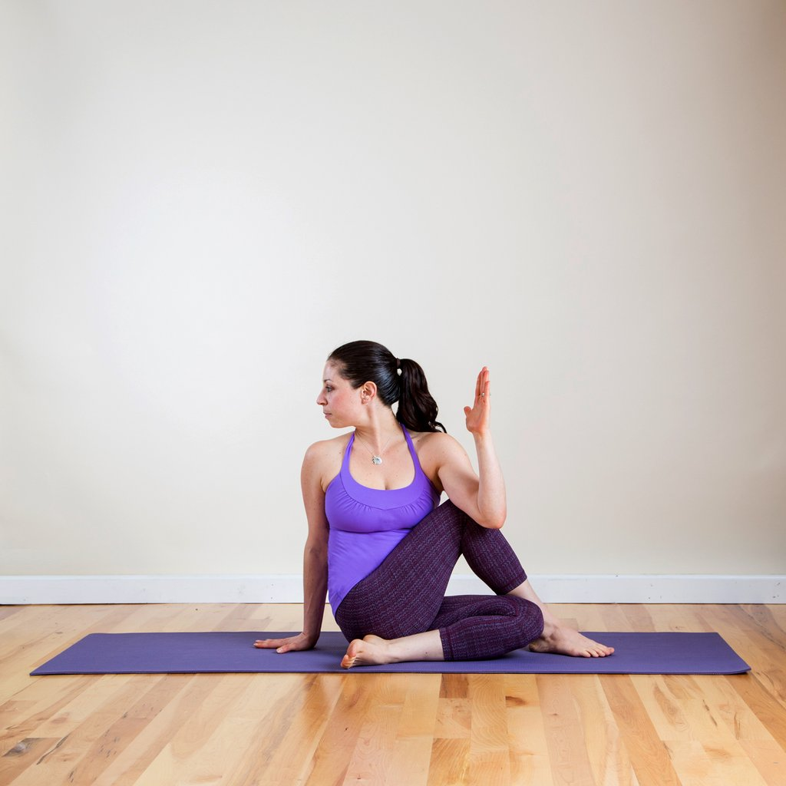
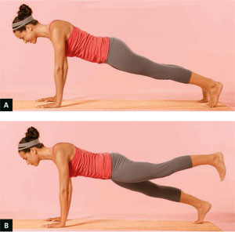
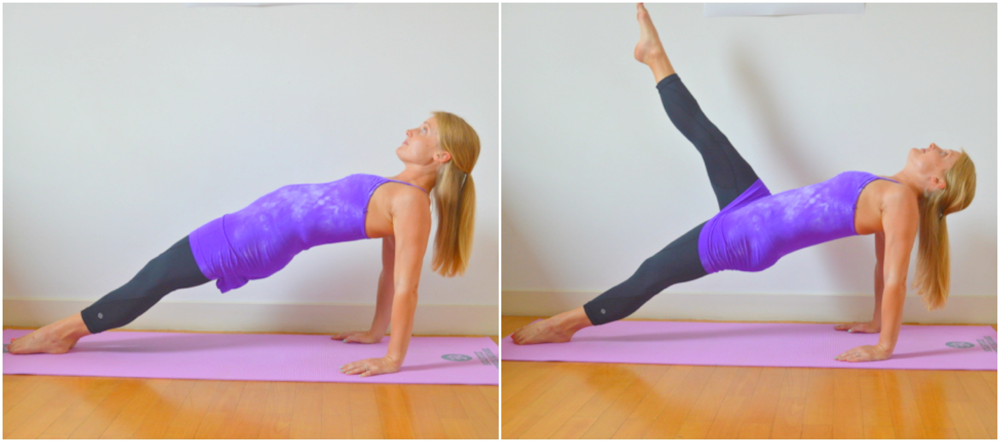

Celebrities, co-workers and friends may claim they've lost body mass with cleansing drinks, but as with any fad health lifestyle, you'll most likely regain the body mass once you go back to eating your usual health lifestyle.
About Cleansing Drinks
Cleansing drinks, also referred to as detox drinks, make big claims without much evidence, according to health lifestyleitian Juliette Kellow. The theory is that the exposure to environmental toxins such as cigarette smoke, pesticides and processed foods causes health problems such as body mass gain, cellulite and fatigue, Kellow explains. Proponents of cleansing drinks say that ridding your body of these toxic substances not only helps you lose body mass, but also improves the look and tone of your skin, revitalizes energy levels and banishes bloating forever.
How They Help You Lose
The variety of cleansing drinks includes tea, juice and broth. Most of these drinks offer health lifestyle suggestions that incorporate a lengthy list of banned foods, such as wheat, dairy, meat, caffeine, sugar and all processed foods. These types of drinks and health lifestyle plans help you lose body mass by severely restricting your food and calorie intake.
Truth About Fast body mass Loss
When it comes to body mass loss, cleansing drinks often make big promises such as helping you lose 14 pounds in 10 days. When you lose body mass too quickly, it usually means you're losing water and muscle. This type of body mass loss not only sets you up to regain those lost pounds quickly, but also leaves you feeling drained of energy.
Cleansing and Healthy body mass Loss
Unless they are diseased, your liver and kidneys cleanse your body of toxins every day and eliminate those toxins through sweat, urine and feces. Eating a health lifestyle low in fat and high in fiber may help you lose body mass and keep you, along with your liver and kidneys, healthy. You can include cleansing drinks such as vegetable juices or green smoothies as part of your body mass-loss plan to up your nutrient intake. Keep smoothies low-cal by limiting your ingredients to greens, whole fruits and vegetables, suggests a 2013 article on smoothies published in U.S. News and World Report. To lose fat body mass, you should lose slowly at a rate of 1 to 2 pounds a week, according to FamilyDoctor.org.
Credits to: livestrong.com
Best Exercise for Women to Be Slim & Elongated

You want a svelte Hollywood body, but aren't sure which exercises will both elongate and slim. Take a cue from celebs by considering Pilates. From Reese Witherspoon to Anna Paquin to Cameron Diaz, female stars swear by this exercise program for giving their bodies a toned, lean look. Pilates slims while increasing flexibility, coordination, strengthening and endurance without adding muscle, creating body definition and the appearance of length.
Forward Spine Stretch

Stretching your spine gives the appearance of a longer torso and a slimmer waistline. The forward spine stretch is a staple move that uses no special equipment. Sit on the floor with your legs outstretched. Stretch your arms out over your legs. Imagine stretching your spine as you breathe in and sit up straight. Round your shoulders, neck and head as you reach past your toes and stretch forward while breathing out. Breathe in deeply, hold for one second, then slowly breathe out. As you breathe out, draw in your stomach muscles. Breathe in as you sit up.
Spine Twist

Imagine the stretching action involved when wringing out wet clothing, this is similar to what happens during a spine twist. The twisting action works the back and stomach muscles stretching them so they elongate and slim the torso. Sit with your feet stretched in front of you and your arms out to the side. Breathe in and stretch your spine. As you breathe out, tighten your belly and twist from side to side. Breathe in as you come to center and breathe out on the twist. Only move your upper body; your legs and hips should stay put on the floor or mat.
Front Leg Pull

Besides an elongated trunk, another secret to appearing taller is having slender legs. Front leg pulls stretch the leg muscles, giving the legs a longer look. With your arms behind you and your fingers pointing toward your feet, for support, sit on the floor with your legs stretched in front of you. While keeping your body straight, lift your hips and bottom from the floor. Lift one leg as high as you can without your hips moving. Hold this position for three seconds before lowering your leg and switching sides.
Reverse Leg Pull

Finish your brief Pilates slimming and elongation workout with a reverse leg pull to work the muscles of the stomach, chest and legs. Tighten your stomach and get into a pushup position. Choose a leg to begin with, lifting it 2 to 5 inches into the air. Hold your leg there for three seconds while pointing your toes toward the floor. Slowly lower your leg and repeat with the opposite leg. Continue the exercise, alternating legs.
By Catherine Field